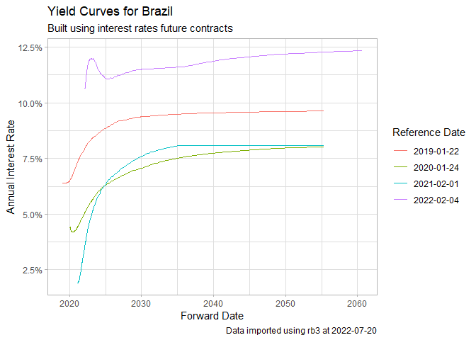
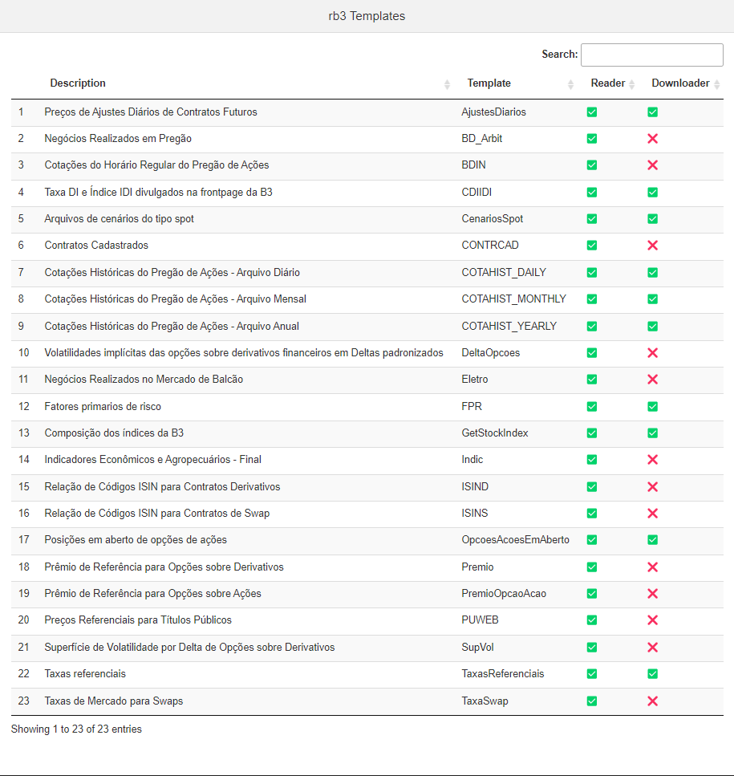

B3 is the main financial exchange in Brazil, offering support and access to trading systems for equity and fixed income markets. In its website you can find a vast number of datasets regarding prices and transactions for contracts available for trading at these markets, including:
- equities/stocks
- futures
- FII (Reits)
- options
- BDRs
- historical yield curves (calculated from futures contracts)
- B3 indexes composition
For example, you can find the current yield curve at this link. Package rb3 uses webscraping tools to download and read these datasets from B3, making it easy to consume it in R in a structured way.
The available datasets are highly valuable, going back as early as 2000’s, and can be used by industry practitioners or academics. None of these datasets are available anywhere else, which makes rb3 an unique package for data importation from the Brazilian financial exchange.
Documentation
The documentation is available in its pkgdown page, where articles (vignettes) with real applications can be found.
Installation
Package rb3 is available in its stable form in CRAN and its development version in Github. Please find the installation commands below:
# stable (CRAN)
install.packages("rb3")
# github (Development branch)
if (!require(devtools)) install.packages("devtools")
devtools::install_github("ropensci/rb3")Examples
Yield curve
In this first example we’ll import and plot the historical yield curve for Brazil using function yc_get.
library(rb3)
library(ggplot2)
library(stringr)
df_yc <- yc_mget(
first_date = Sys.Date() - 255 * 5,
last_date = Sys.Date(),
by = 255
)
#> Warning: Automatic coercion from double to character was deprecated in purrr 1.0.0.
#> ℹ Please use an explicit call to `as.character()` within `map_chr()` instead.
#> ℹ The deprecated feature was likely used in the rb3 package.
#> Please report the issue at <https://github.com/wilsonfreitas/rb3/issues>.
p <- ggplot(
df_yc,
aes(
x = forward_date,
y = r_252,
group = refdate,
color = factor(refdate)
)
) +
geom_line() +
labs(
title = "Yield Curves for Brazil",
subtitle = "Built using interest rates future contracts",
caption = str_glue("Data imported using rb3 at {Sys.Date()}"),
x = "Forward Date",
y = "Annual Interest Rate",
color = "Reference Date"
) +
theme_light() +
scale_y_continuous(labels = scales::percent)
print(p)
Futures prices
Get settlement future prices with futures_get.
library(rb3)
library(dplyr)
df <- futures_mget(
first_date = "2022-04-01",
last_date = "2022-04-29",
by = 5
)
glimpse(
df |>
filter(commodity == "DI1")
)
#> Rows: 153
#> Columns: 8
#> $ refdate <date> 2022-04-01, 2022-04-01, 2022-04-01, 2022-04-01, 2022…
#> $ commodity <chr> "DI1", "DI1", "DI1", "DI1", "DI1", "DI1", "DI1", "DI1…
#> $ maturity_code <chr> "J22", "K22", "M22", "N22", "Q22", "U22", "V22", "X22…
#> $ symbol <chr> "DI1J22", "DI1K22", "DI1M22", "DI1N22", "DI1Q22", "DI…
#> $ price_previous <dbl> 99999.99, 99172.50, 98159.27, 97181.87, 96199.14, 951…
#> $ price <dbl> 100000.00, 99172.31, 98160.23, 97185.43, 96210.42, 95…
#> $ change <dbl> 0.01, -0.19, 0.96, 3.56, 11.28, 21.61, 34.93, 48.85, …
#> $ settlement_value <dbl> 0.01, 0.19, 0.96, 3.56, 11.28, 21.61, 34.93, 48.85, 5…Equity data
Equity closing data (without ANY price adjustments) is available thru cotahist_get.
library(rb3)
library(bizdays)
#>
#> Attaching package: 'bizdays'
#> The following object is masked from 'package:stats':
#>
#> offset
# fix for ssl error (only in linux)
if (Sys.info()["sysname"] == "Linux") {
httr::set_config(
httr::config(ssl_verifypeer = FALSE)
)
}
date <- preceding(Sys.Date() - 1, "Brazil/ANBIMA") # last business day
ch <- cotahist_get(date, "daily")
glimpse(
cotahist_equity_get(ch)
)
#> Rows: 367
#> Columns: 13
#> $ refdate <date> 2023-03-03, 2023-03-03, 2023-03-03, 2023-03-03,…
#> $ symbol <chr> "AERI3", "AESB3", "AFLT3", "AGRO3", "AGXY3", "BR…
#> $ open <dbl> 1.15, 10.00, 8.89, 26.15, 8.45, 25.89, 28.83, 14…
#> $ high <dbl> 1.17, 10.18, 8.89, 26.60, 9.06, 26.35, 29.24, 15…
#> $ low <dbl> 1.11, 9.96, 8.71, 26.12, 8.39, 25.80, 28.76, 14.…
#> $ close <dbl> 1.12, 10.16, 8.71, 26.33, 9.06, 25.92, 28.92, 14…
#> $ average <dbl> 1.14, 10.08, 8.80, 26.39, 8.75, 26.13, 29.00, 14…
#> $ best_bid <dbl> 1.12, 10.14, 8.71, 26.32, 8.92, 25.92, 28.81, 14…
#> $ best_ask <dbl> 1.13, 10.16, 8.99, 26.33, 9.06, 26.08, 28.92, 14…
#> $ volume <dbl> 4481724, 19128087, 1760, 7341008, 234691, 689933…
#> $ traded_contracts <dbl> 3926400, 1897500, 200, 278100, 26800, 26400, 305…
#> $ transactions_quantity <int> 2818, 5573, 2, 1399, 177, 140, 7403, 17092, 1464…
#> $ distribution_id <int> 101, 105, 119, 113, 101, 145, 145, 123, 102, 166…Funds data
One can also download hedge fund data with cotahist_etfs_get.
glimpse(
cotahist_etfs_get(ch)
)
#> Rows: 100
#> Columns: 13
#> $ refdate <date> 2023-03-03, 2023-03-03, 2023-03-03, 2023-03-03,…
#> $ symbol <chr> "AGRI11", "IBOB11", "OGIN11", "BOVB11", "BOVS11"…
#> $ open <dbl> 43.51, 84.31, 9.51, 104.52, 79.95, 104.50, 10.40…
#> $ high <dbl> 43.63, 84.31, 9.63, 105.11, 80.57, 105.74, 10.51…
#> $ low <dbl> 42.91, 84.17, 9.35, 104.52, 79.74, 104.49, 10.40…
#> $ close <dbl> 43.10, 84.17, 9.57, 104.68, 80.13, 104.90, 10.45…
#> $ average <dbl> 43.40, 84.17, 9.50, 104.68, 80.22, 105.17, 10.46…
#> $ best_bid <dbl> 41.50, 83.51, 9.44, 104.68, 80.13, 104.90, 10.45…
#> $ best_ask <dbl> 46.24, 84.18, 9.57, 113.00, 90.00, 105.11, 10.49…
#> $ volume <dbl> 2274762.37, 1375010.67, 14024.14, 241499.09, 444…
#> $ traded_contracts <dbl> 52405, 16336, 1476, 2307, 554, 1733901, 336092, …
#> $ transactions_quantity <int> 50, 6, 24, 15, 452, 11558, 1949, 5, 25, 4402, 4,…
#> $ distribution_id <int> 100, 100, 102, 100, 100, 101, 100, 101, 100, 100…FIIs (Brazilian REITs) data
Download FII (Fundo de Investimento Imobiliário) data with cotahist_fiis_get:
glimpse(
cotahist_fiis_get(ch)
)
#> Rows: 268
#> Columns: 13
#> $ refdate <date> 2023-03-03, 2023-03-03, 2023-03-03, 2023-03-03,…
#> $ symbol <chr> "BZLI11", "AFHI11", "IBCR11", "IDGR11", "LUGG11"…
#> $ open <dbl> 17.00, 94.69, 76.73, 80.50, 71.98, 94.83, 11.50,…
#> $ high <dbl> 17.00, 94.70, 77.00, 80.50, 72.00, 95.88, 11.50,…
#> $ low <dbl> 17.00, 93.72, 76.39, 80.50, 71.16, 94.02, 11.49,…
#> $ close <dbl> 17.00, 94.20, 77.00, 80.50, 71.61, 94.31, 11.49,…
#> $ average <dbl> 17.00, 94.19, 76.70, 80.50, 71.53, 94.59, 11.49,…
#> $ best_bid <dbl> 17.00, 94.20, 76.74, 1.00, 71.42, 94.31, 10.96, …
#> $ best_ask <dbl> 18.00, 94.42, 77.00, 80.50, 71.61, 94.32, 11.49,…
#> $ volume <dbl> 357.00, 453376.17, 54150.68, 8050.00, 46068.54, …
#> $ traded_contracts <dbl> 21, 4813, 706, 100, 644, 11197, 10, 70, 207, 100…
#> $ transactions_quantity <int> 2, 1670, 75, 1, 203, 3116, 4, 6, 58, 73, 2650, 2…
#> $ distribution_id <int> 100, 124, 121, 112, 140, 152, 213, 102, 226, 144…BDRs data
Download BDR (Brazilian depositary receipts) with cotahist_bdrs_get:
glimpse(
cotahist_bdrs_get(ch)
)
#> Rows: 507
#> Columns: 13
#> $ refdate <date> 2023-03-03, 2023-03-03, 2023-03-03, 2023-03-03,…
#> $ symbol <chr> "ADBE34", "CSCO34", "I1QV34", "I1QY34", "I1RM34"…
#> $ open <dbl> 34.60, 50.53, 283.92, 19.76, 283.50, 500.19, 60.…
#> $ high <dbl> 35.86, 51.44, 287.00, 20.00, 283.50, 500.19, 61.…
#> $ low <dbl> 34.60, 50.53, 283.92, 19.70, 283.50, 500.19, 60.…
#> $ close <dbl> 35.48, 51.44, 287.00, 19.96, 283.50, 500.19, 61.…
#> $ average <dbl> 35.40, 51.18, 285.46, 19.75, 283.50, 500.19, 60.…
#> $ best_bid <dbl> 35.48, 48.45, 0.00, 19.55, 249.50, 200.00, 59.40…
#> $ best_ask <dbl> 39.98, 51.44, 335.10, 0.00, 310.00, 0.00, 70.00,…
#> $ volume <dbl> 600948.59, 437857.01, 570.92, 39665.04, 1134.00,…
#> $ traded_contracts <dbl> 16972, 8555, 2, 2008, 4, 472, 77, 500, 535693, 1…
#> $ transactions_quantity <int> 230, 144, 2, 25, 1, 2, 2, 2, 1041, 13, 54, 92, 2…
#> $ distribution_id <int> 101, 149, 100, 100, 112, 113, 102, 146, 117, 112…Equity options
Download equity options contracts with cotahist_option_get:
glimpse(
cotahist_equity_options_get(ch)
)
#> Rows: 6,656
#> Columns: 14
#> $ refdate <date> 2023-03-03, 2023-03-03, 2023-03-03, 2023-03-03,…
#> $ symbol <chr> "ABCBC200", "ABCBO176", "ABEVF160", "ABEVP300", …
#> $ type <fct> Call, Put, Call, Put, Put, Put, Put, Put, Call, …
#> $ strike <dbl> 19.69, 17.69, 14.82, 18.82, 28.82, 14.82, 13.82,…
#> $ maturity_date <date> 2023-03-17, 2023-03-17, 2023-06-16, 2023-04-20,…
#> $ open <dbl> 0.07, 0.28, 0.30, 5.48, 15.30, 1.50, 0.90, 2.76,…
#> $ high <dbl> 0.07, 0.28, 0.30, 5.48, 15.30, 1.50, 0.98, 2.76,…
#> $ low <dbl> 0.06, 0.28, 0.28, 5.48, 15.28, 1.50, 0.90, 2.76,…
#> $ close <dbl> 0.06, 0.28, 0.28, 5.48, 15.28, 1.50, 0.98, 2.76,…
#> $ average <dbl> 0.06, 0.28, 0.28, 5.48, 15.28, 1.50, 0.92, 2.76,…
#> $ volume <dbl> 76, 140, 86, 5480, 7643, 1500, 7530, 1380, 10423…
#> $ traded_contracts <dbl> 1100, 500, 300, 1000, 500, 1000, 8100, 500, 3898…
#> $ transactions_quantity <int> 2, 1, 3, 2, 4, 1, 3, 1, 89, 2, 13, 8, 2, 174, 12…
#> $ distribution_id <int> 142, 143, 124, 124, 124, 124, 124, 124, 125, 125…Indexes composition
The list with available B3 indexes can be obtained with indexes_get.
indexes_get()
#> [1] "AGFS" "BDRX" "GPTW" "IBOV" "IBRA" "IBXL" "IBXX" "ICO2" "ICON" "IDIV"
#> [11] "IEEX" "IFIL" "IFIX" "IFNC" "IGCT" "IGCX" "IGNM" "IMAT" "IMOB" "INDX"
#> [21] "ISEE" "ITAG" "IVBX" "MLCX" "SMLL" "UTIL"And the composition of a specific index with index_comp_get.
(ibov_comp <- index_comp_get("IBOV"))
#> [1] "ABEV3" "ALPA4" "AMER3" "ASAI3" "AZUL4" "B3SA3" "BBAS3" "BBDC3"
#> [9] "BBDC4" "BBSE3" "BEEF3" "BIDI11" "BPAC11" "BPAN4" "BRAP4" "BRFS3"
#> [17] "BRKM5" "BRML3" "CASH3" "CCRO3" "CIEL3" "CMIG4" "CMIN3" "COGN3"
#> [25] "CPFE3" "CPLE6" "CRFB3" "CSAN3" "CSNA3" "CVCB3" "CYRE3" "DXCO3"
#> [33] "ECOR3" "EGIE3" "ELET3" "ELET6" "EMBR3" "ENBR3" "ENEV3" "ENGI11"
#> [41] "EQTL3" "EZTC3" "FLRY3" "GGBR4" "GOAU4" "GOLL4" "HAPV3" "HYPE3"
#> [49] "IGTI11" "IRBR3" "ITSA4" "ITUB4" "JBSS3" "JHSF3" "KLBN11" "LCAM3"
#> [57] "LREN3" "LWSA3" "MGLU3" "MRFG3" "MRVE3" "MULT3" "NTCO3" "PCAR3"
#> [65] "PETR3" "PETR4" "PETZ3" "POSI3" "PRIO3" "QUAL3" "RADL3" "RAIL3"
#> [73] "RDOR3" "RENT3" "RRRP3" "SANB11" "SBSP3" "SLCE3" "SOMA3" "SULA11"
#> [81] "SUZB3" "TAEE11" "TIMS3" "TOTS3" "UGPA3" "USIM5" "VALE3" "VBBR3"
#> [89] "VIIA3" "VIVT3" "WEGE3" "YDUQ3"With the index composition you can use COTAHIST to select their quotes.
glimpse(
cotahist_get_symbols(ch, ibov_comp)
)
#> Rows: 88
#> Columns: 13
#> $ refdate <date> 2023-03-03, 2023-03-03, 2023-03-03, 2023-03-03,…
#> $ symbol <chr> "BRAP4", "CSAN3", "CSNA3", "LREN3", "LWSA3", "PC…
#> $ open <dbl> 28.83, 14.73, 17.90, 18.27, 4.58, 14.36, 13.12, …
#> $ high <dbl> 29.24, 15.06, 18.52, 18.27, 4.81, 14.70, 13.22, …
#> $ low <dbl> 28.76, 14.64, 17.85, 17.74, 4.58, 14.19, 12.99, …
#> $ close <dbl> 28.92, 14.74, 18.24, 17.75, 4.75, 14.41, 13.11, …
#> $ average <dbl> 29.00, 14.85, 18.29, 17.93, 4.70, 14.47, 13.09, …
#> $ best_bid <dbl> 28.81, 14.73, 18.24, 17.74, 4.74, 14.41, 13.11, …
#> $ best_ask <dbl> 28.92, 14.74, 18.25, 17.76, 4.75, 14.45, 13.12, …
#> $ volume <dbl> 88684490, 108449481, 151985388, 179220052, 42526…
#> $ traded_contracts <dbl> 3057800, 7302400, 8307600, 9995000, 9041300, 263…
#> $ transactions_quantity <int> 7403, 17092, 13794, 28476, 12587, 7990, 34400, 2…
#> $ distribution_id <int> 145, 123, 258, 215, 102, 166, 126, 115, 134, 144…Template System
One important part of rb3 infrastructure is its Template System.
All datasets handled by the rb3 package are configured in a template, that is an YAML file. The template brings many information regarding the datasets, like its description and its metadata that describes its columns, their types and how it has to be parsed. The template fully describes its dataset.
Once you have the template implemented you can fetch and read downloaded data directly with the functions download_marketdata and read_marketdata.
For examples, let’s use the template FPR to download and read data regarding primitive risk factor used by B3 in its risk engine.
f <- download_marketdata("FPR", refdate = as.Date("2022-05-10"))
f
#> [1] "C:/Users/wilso/R/rb3-cache/FPR/7a2422cc97221426a3b2bd4419215481/FP220510/FatoresPrimitivosRisco.txt"download_marketdata returns the path for the downloaded file.
fpr <- read_marketdata(f, "FPR")
fpr
#> $Header
#> # A tibble: 1 × 2
#> tipo_registro data_geracao_arquivo
#> <int> <date>
#> 1 1 2022-05-10
#>
#> $Data
#> # A tibble: 3,204 × 11
#> tipo_r…¹ id_fpr nome_…² forma…³ id_gr…⁴ id_ca…⁵ id_in…⁶ orige…⁷ base base_…⁸
#> <int> <int> <chr> <fct> <dbl> <chr> <dbl> <int> <int> <int>
#> 1 2 1422 VLRAPT4 Basis … 1 BVMF 2.00e11 8 0 0
#> 2 2 1423 VLPETR3 Basis … 1 BVMF 2.00e11 8 0 0
#> 3 2 1424 VLSEER3 Basis … 1 BVMF 2.00e11 8 0 0
#> 4 2 1426 VLJBSS3 Basis … 1 BVMF 2.00e11 8 0 0
#> 5 2 1427 VLKLBN… Basis … 1 BVMF 2.00e11 8 0 0
#> 6 2 1428 VLITUB3 Basis … 1 BVMF 2.00e11 8 0 0
#> 7 2 1429 VLITSA4 Basis … 1 BVMF 2.00e11 8 0 0
#> 8 2 1430 VLHYPE3 Basis … 1 BVMF 2.00e11 8 0 0
#> 9 2 1431 VLGRND3 Basis … 1 BVMF 2.00e11 8 0 0
#> 10 2 1433 VLUGPA3 Basis … 1 BVMF 2.00e11 8 0 0
#> # … with 3,194 more rows, 1 more variable: criterio_capitalizacao <int>, and
#> # abbreviated variable names ¹tipo_registro, ²nome_fpr, ³formato_variacao,
#> # ⁴id_grupo_fpr, ⁵id_camara_indicador, ⁶id_instrumento_indicador,
#> # ⁷origem_instrumento, ⁸base_interpolacao
#>
#> attr(,"class")
#> [1] "parts"read_marketdata parses the downloaded file according to the metadata configured in the template FPR.
Here it follows a view of the show_templates adding that lists the available templates.
